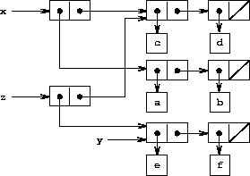

3.3 Modeling with Mutable Data
Chapter 2 dealt with compound data as a means for constructing computational objects that have several parts, in order to model real-world objects that have several aspects. In that chapter we introduced the discipline of data abstraction, according to which data structures are specified in terms of constructors, which create data objects, and selectors, which access the parts of compound data objects. But we now know that there is another aspect of data that chapter 2 did not address. The desire to model systems composed of objects that have changing state leads us to the need to modify compound data objects, as well as to construct and select from them. In order to model compound objects with changing state, we will design data abstractions to include, in addition to selectors and constructors, operations called mutators, which modify data objects. For instance, modeling a banking system requires us to change account balances. Thus, a data structure for representing bank accounts might admit an operation
(set-balance! <account> <new-value>)
that changes the balance of the designated account to the designated new value. Data objects for which mutators are defined are known as mutable data objects.
Chapter 2 introduced pairs as a general-purpose ``glue'' for synthesizing compound data. We begin this section by defining basic mutators for pairs, so that pairs can serve as building blocks for constructing mutable data objects. These mutators greatly enhance the representational power of pairs, enabling us to build data structures other than the sequences and trees that we worked with in section 2.2. We also present some examples of simulations in which complex systems are modeled as collections of objects with local state.
3.3.1 Mutable List Structure
The basic
operations on pairs -- cons, car, and cdr -- can be used to
construct list structure and to select parts from list structure, but
they are incapable of modifying list structure. The same is true of the
list operations we have used so far, such as append and list, since
these can be defined in terms of cons, car, and cdr. To modify
list structures we need new operations.
 {border="0"}
{border="0"}
Figure 3.12: Lists x: ((a b) c d) and y: (e f).
 {border="0"}
{border="0"}
Figure 3.13: Effect of (set-car! x y) on the lists in
figure 3.12.
{border="0"}
Figure 3.14: Effect of (define z (cons y (cdr x))) on the lists
in figure 3.12.
 {border="0"}
{border="0"}
Figure 3.15: Effect of (set-cdr! x y) on the lists in
figure 3.12.
The
primitive mutators for pairs are set-car! and set-cdr!. Set-car!
takes two arguments, the first of which must be a pair. It modifies this
pair, replacing the car pointer by a pointer to the second argument of
set-car!.^[16]{.small}^{#call_footnote_Temp_349}
As an example, suppose that x is bound to the list ((a b) c d) and
y to the list (e f) as illustrated in
figure 3.12. Evaluating the expression
(set-car! x y) modifies the pair to which x is bound, replacing its
car by the value of y. The result of the operation is shown in
figure 3.13. The structure x has been
modified and would now be printed as ((e f) c d). The pairs
representing the list (a b), identified by the pointer that was
replaced, are now detached from the original
structure.^[17]{.small}^{#call_footnote_Temp_350}
Compare figure 3.13 with
figure 3.14, which illustrates the result
of executing (define z (cons y (cdr x))) with x and y bound to the
original lists of figure 3.12. The
variable z is now bound to a new pair created by the cons operation;
the list to which x is bound is unchanged.
The set-cdr! operation is similar to set-car!. The only difference
is that the cdr pointer of the pair, rather than the car pointer, is
replaced. The effect of executing (set-cdr! x y) on the lists of
figure 3.12 is shown in
figure 3.15. Here the cdr pointer of
x has been replaced by the pointer to (e f). Also, the list (c d),
which used to be the cdr of x, is now detached from the structure.
Cons builds new list structure by creating new pairs,
while set-car! and set-cdr! modify existing pairs. Indeed, we could
implement cons in terms of the two mutators, together with a procedure
get-new-pair, which returns a new pair that is not part of any
existing list structure. We obtain the new pair, set its car and cdr
pointers to the designated objects, and return the new pair as the
result of the
cons.^[18]{.small}^{#call_footnote_Temp_351}
(define (cons x y)
(let ((new (get-new-pair)))
(set-car! new x)
(set-cdr! new y)
new))
Exercise 3.12. The following procedure for appending lists was introduced in section 2.2.1:
(define (append x y)
(if (null? x)
y
(cons (car x) (append (cdr x) y))))
Append forms a new list by successively consing the elements of x
onto y. The procedure append! is similar to append, but it is a
mutator rather than a constructor. It appends the lists by splicing them
together, modifying the final pair of x so that its cdr is now y.
(It is an error to call append! with an empty x.)
(define (append! x y)
(set-cdr! (last-pair x) y)
x)
Here last-pair is a procedure that returns the last pair in its
argument:
(define (last-pair x)
(if (null? (cdr x))
x
(last-pair (cdr x))))
Consider the interaction
(define x (list 'a 'b))
(define y (list 'c 'd))
(define z (append x y))
z
(a b c d)
(cdr x)
<response>
(define w (append! x y))
w
(a b c d)
(cdr x)
<response>
What are the missing <response>s? Draw box-and-pointer diagrams to explain your answer.
Exercise 3.13. Consider the
following make-cycle procedure, which uses the last-pair procedure
defined in exercise 3.12:
(define (make-cycle x)
(set-cdr! (last-pair x) x)
x)
Draw a box-and-pointer diagram that shows the structure z created by
(define z (make-cycle (list 'a 'b 'c)))
What happens if we try to compute (last-pair z)?
Exercise 3.14. The following procedure is quite useful, although obscure:
(define (mystery x)
(define (loop x y)
(if (null? x)
y
(let ((temp (cdr x)))
(set-cdr! x y)
(loop temp x))))
(loop x '()))
Loop uses the ``temporary'' variable temp to hold the old value
of the cdr of x, since the set-cdr! on the next line destroys the
cdr. Explain what mystery does in general. Suppose v is defined by
(define v (list 'a 'b 'c 'd)). Draw the box-and-pointer diagram that
represents the list to which v is bound. Suppose that we now evaluate
(define w (mystery v)). Draw box-and-pointer diagrams that show the
structures v and w after evaluating this expression. What would be
printed as the values of v and w ?
Sharing and identity
We
mentioned in section 3.1.3 the
theoretical issues of sameness'' and change'' raised by the
introduction of assignment. These issues arise in practice when
individual pairs are shared among different data objects. For example,
consider the structure formed by
(define x (list 'a 'b))
(define z1 (cons x x))
As shown in figure 3.16, z1 is a pair
whose car and cdr both point to the same pair x. This sharing of
x by the car and cdr of z1 is a consequence of the
straightforward way in which cons is implemented. In general, using
cons to construct lists will result in an interlinked structure of
pairs in which many individual pairs are shared by many different
structures.
 {border="0"}
{border="0"}
Figure 3.16: The list z1 formed by (cons x x).
 {border="0"}
{border="0"}
Figure 3.17: The list z2 formed by
(cons (list 'a 'b) (list 'a 'b)).
In contrast to figure 3.16, figure 3.17 shows the structure created by
(define z2 (cons (list 'a 'b) (list 'a 'b)))
In this structure, the pairs in the two (a b) lists are distinct,
although the actual symbols are
shared.^[19]{.small}^{#call_footnote_Temp_356}
When thought of as a list, z1 and z2 both represent ``the same''
list, ((a b) a b). In general, sharing is completely undetectable if
we operate on lists using only cons, car, and cdr. However, if we
allow mutators on list structure, sharing becomes significant. As an
example of the difference that sharing can make, consider the following
procedure, which modifies the car of the structure to which it is
applied:
(define (set-to-wow! x)
(set-car! (car x) 'wow)
x)
Even though z1 and z2 are ``the same'' structure, applying
set-to-wow! to them yields different results. With z1, altering the
car also changes the cdr, because in z1 the car and the cdr
are the same pair. With z2, the car and cdr are distinct, so
set-to-wow! modifies only the car:
z1
((a b) a b)
(set-to-wow! z1)
((wow b) wow b)
z2
((a b) a b)
(set-to-wow! z2)
((wow b) a b)
One way to detect sharing in list structures is to use the predicate
eq?, which we introduced in
section 2.3.1 as a way to test whether
two symbols are equal. More generally, (eq? x y) tests whether x and
y are the same object (that is, whether x and y are equal as
pointers). Thus, with z1 and z2 as defined in
figures 3.16
and 3.17, (eq? (car z1) (cdr z1)) is
true and (eq? (car z2) (cdr z2)) is false.
As will be seen in the following sections, we can exploit
sharing to greatly extend the repertoire of data structures that can be
represented by pairs. On the other hand, sharing can also be dangerous,
since modifications made to structures will also affect other structures
that happen to share the modified parts. The mutation operations
set-car! and set-cdr! should be used with care; unless we have a
good understanding of how our data objects are shared, mutation can have
unanticipated
results.^[20]{.small}^{#call_footnote_Temp_357}
Exercise 3.15. Draw box-and-pointer diagrams to
explain the effect of set-to-wow! on the structures z1 and z2
above.
Exercise 3.16. Ben Bitdiddle decides to write a
procedure to count the number of pairs in any list structure. It's easy,'' he reasons. The number of pairs in any structure is the
number in the car plus the number in the cdr plus one more to count
the current pair.'' So Ben writes the following procedure:
(define (count-pairs x)
(if (not (pair? x))
0
(+ (count-pairs (car x))
(count-pairs (cdr x))
1)))
Show that this procedure is not correct. In particular, draw box-and-pointer diagrams representing list structures made up of exactly three pairs for which Ben's procedure would return 3; return 4; return 7; never return at all.
Exercise 3.17. Devise a correct version of the
count-pairs procedure of exercise 3.16
that returns the number of distinct pairs in any structure. (Hint:
Traverse the structure, maintaining an auxiliary data structure that is
used to keep track of which pairs have already been counted.)
Exercise 3.18. Write a procedure
that examines a list and determines whether it contains a cycle, that
is, whether a program that tried to find the end of the list by taking
successive cdrs would go into an infinite loop.
Exercise 3.13 constructed such lists.
Exercise 3.19. Redo exercise 3.18 using an algorithm that takes only a constant amount of space. (This requires a very clever idea.)
Mutation is just assignment
When we introduced compound data, we observed in section 2.1.3 that pairs can be represented purely in terms of procedures:
(define (cons x y)
(define (dispatch m)
(cond ((eq? m 'car) x)
((eq? m 'cdr) y)
(else (error "Undefined operation -- CONS" m))))
dispatch)
(define (car z) (z 'car))
(define (cdr z) (z 'cdr))
The same observation is true for mutable data. We can implement mutable
data objects as procedures using assignment and local state. For
instance, we can extend the above pair implementation to handle
set-car! and set-cdr! in a manner analogous to the way we
implemented bank accounts using make-account in
section 3.1.1:
(define (cons x y)
(define (set-x! v) (set! x v))
(define (set-y! v) (set! y v))
(define (dispatch m)
(cond ((eq? m 'car) x)
((eq? m 'cdr) y)
((eq? m 'set-car!) set-x!)
((eq? m 'set-cdr!) set-y!)
(else (error "Undefined operation -- CONS" m))))
dispatch)
(define (car z) (z 'car))
(define (cdr z) (z 'cdr))
(define (set-car! z new-value)
((z 'set-car!) new-value)
z)
(define (set-cdr! z new-value)
((z 'set-cdr!) new-value)
z)
Assignment is all that is needed, theoretically, to account for the
behavior of mutable data. As soon as we admit set! to our language, we
raise all the issues, not only of assignment, but of mutable data in
general.^[21]{.small}^{#call_footnote_Temp_364}
Exercise 3.20. Draw environment diagrams to illustrate the evaluation of the sequence of expressions
(define x (cons 1 2))
(define z (cons x x))
(set-car! (cdr z) 17)
(car x)
17
using the procedural implementation of pairs given above. (Compare exercise 3.11.)
3.3.2 Representing Queues
The mutators set-car! and set-cdr! enable us to use
pairs to construct data structures that cannot be built with cons,
car, and cdr alone. This section shows how to use pairs to represent
a data structure called a queue.
Section 3.3.3 will show how to represent
data structures called tables.
A queue is a sequence in which items are inserted at one end (called
the rear of the queue) and deleted from the other end
(the front). Figure 3.18
shows an initially empty queue in which the items a and b are
inserted. Then a is removed, c and d are inserted, and b is
removed. Because items are always removed in the order in which they are
inserted, a queue is sometimes called a FIFO (first in,
first out) buffer.
Operation Resulting Queue
(define q (make-queue))
(insert-queue! q 'a) a
(insert-queue! q 'b) a b
(delete-queue! q) b
(insert-queue! q 'c) b c
(insert-queue! q 'd) b c d
(delete-queue! q) c d
Figure 3.18: Queue operations.
In terms of data abstraction, we can regard a queue as defined by the following set of operations:
- a constructor:
returns an empty queue (a queue containing no items).(make-queue) - two selectors:
tests if the queue is empty.(empty-queue? <queue>)
returns the object at the front of the queue, signaling an error if the queue is empty; it does not modify the queue.(front-queue <queue>) - two mutators:
inserts the item at the rear of the queue and returns the modified queue as its value.(insert-queue! <queue> <item>)
removes the item at the front of the queue and returns the modified queue as its value, signaling an error if the queue is empty before the deletion.(delete-queue! <queue>)
Because a queue is a sequence of items, we could certainly represent it
as an ordinary list; the front of the queue would be the car of the
list, inserting an item in the queue would amount to appending a new
element at the end of the list, and deleting an item from the queue
would just be taking the cdr of the list. However, this representation
is inefficient, because in order to insert an item we must scan the list
until we reach the end. Since the only method we have for scanning a
list is by successive cdr operations, this scanning requires
 {border="0"}(n) steps for a list of n items. A
simple modification to the list representation overcomes this
disadvantage by allowing the queue operations to be implemented so that
they require {border="0"}(1) steps; that is, so
that the number of steps needed is independent of the length of the
queue.
{border="0"}(n) steps for a list of n items. A
simple modification to the list representation overcomes this
disadvantage by allowing the queue operations to be implemented so that
they require {border="0"}(1) steps; that is, so
that the number of steps needed is independent of the length of the
queue.
The difficulty with the list representation arises from the need to scan to find the end of the list. The reason we need to scan is that, although the standard way of representing a list as a chain of pairs readily provides us with a pointer to the beginning of the list, it gives us no easily accessible pointer to the end. The modification that avoids the drawback is to represent the queue as a list, together with an additional pointer that indicates the final pair in the list. That way, when we go to insert an item, we can consult the rear pointer and so avoid scanning the list.
A queue is represented, then, as a pair of pointers, front-ptr and
rear-ptr, which indicate, respectively, the first and last pairs in an
ordinary list. Since we would like the queue to be an identifiable
object, we can use cons to combine the two pointers. Thus, the queue
itself will be the cons of the two pointers.
Figure 3.19 illustrates this
representation.
 {border="0"}
{border="0"}
Figure 3.19: Implementation of a queue as a list with front and rear pointers.
To define the queue operations we use the following procedures, which enable us to select and to modify the front and rear pointers of a queue:
(define (front-ptr queue) (car queue))
(define (rear-ptr queue) (cdr queue))
(define (set-front-ptr! queue item) (set-car! queue item))
(define (set-rear-ptr! queue item) (set-cdr! queue item))
Now we can implement the actual queue operations. We will consider a queue to be empty if its front pointer is the empty list:
(define (empty-queue? queue) (null? (front-ptr queue)))
The make-queue constructor returns, as an initially empty queue, a
pair whose car and cdr are both the empty list:
(define (make-queue) (cons '() '()))
To select the item at the front of the queue, we return the car of the
pair indicated by the front pointer:
(define (front-queue queue)
(if (empty-queue? queue)
(error "FRONT called with an empty queue" queue)
(car (front-ptr queue))))
To insert an item in a queue, we follow the method whose result is
indicated in figure 3.20. We first create
a new pair whose car is the item to be inserted and whose cdr is the
empty list. If the queue was initially empty, we set the front and rear
pointers of the queue to this new pair. Otherwise, we modify the final
pair in the queue to point to the new pair, and also set the rear
pointer to the new pair.
 {border="0"}
{border="0"}
Figure 3.20: Result of using (insert-queue! q 'd) on the queue of
figure 3.19.
(define (insert-queue! queue item)
(let ((new-pair (cons item '())))
(cond ((empty-queue? queue)
(set-front-ptr! queue new-pair)
(set-rear-ptr! queue new-pair)
queue)
(else
(set-cdr! (rear-ptr queue) new-pair)
(set-rear-ptr! queue new-pair)
queue))))
To delete the item at the front of the queue, we merely modify the front
pointer so that it now points at the second item in the queue, which can
be found by following the cdr pointer of the first item (see
figure 3.21):^[22]{.small}^](book-Z-H-22.html#footnote_Temp_366){#call_footnote_Temp_366}
 {border="0"}
{border="0"}
Figure 3.21: Result of using (delete-queue! q) on the queue of
figure 3.20.
(define (delete-queue! queue)
(cond ((empty-queue? queue)
(error "DELETE! called with an empty queue" queue))
(else
(set-front-ptr! queue (cdr (front-ptr queue)))
queue)))
Exercise 3.21. Ben Bitdiddle decides to test the queue implementation described above. He types in the procedures to the Lisp interpreter and proceeds to try them out:
(define q1 (make-queue))
(insert-queue! q1 'a)
((a) a)
(insert-queue! q1 'b)
((a b) b)
(delete-queue! q1)
((b) b)
(delete-queue! q1)
(() b)
It's all wrong!'' he complains. The interpreter's response
shows that the last item is inserted into the queue twice. And when I
delete both items, the second b is still there, so the queue isn't
empty, even though it's supposed to be.'' Eva Lu Ator suggests that
Ben has misunderstood what is happening. It's not that the items are going into the queue twice,'' she explains. It's just that
the standard Lisp printer doesn't know how to make sense of the queue
representation. If you want to see the queue printed correctly, you'll
have to define your own print procedure for queues.'' Explain what Eva
Lu is talking about. In particular, show why Ben's examples produce the
printed results that they do. Define a procedure
print-queue that takes a queue as input and prints the
sequence of items in the queue.
Exercise 3.22. Instead of
representing a queue as a pair of pointers, we can build a queue as a
procedure with local state. The local state will consist of pointers to
the beginning and the end of an ordinary list. Thus, the make-queue
procedure will have the form
(define (make-queue)
(let ((front-ptr ...)
(rear-ptr ...))
<definitions of internal procedures>
(define (dispatch m) ...)
dispatch))
Complete the definition of make-queue and provide implementations of
the queue operations using this representation.
Exercise 3.23. A
deque (``double-ended queue'') is a sequence in which items can be
inserted and deleted at either the front or the rear. Operations on
deques are the constructor make-deque, the predicate empty-deque?,
selectors front-deque and rear-deque, and mutators
front-insert-deque!, rear-insert-deque!, front-delete-deque!, and
rear-delete-deque!. Show how to represent deques using pairs, and give
implementations of the
operations.^[23]{.small}^{#call_footnote_Temp_370}
All operations should be accomplished in
{border="0"}(1) steps.
3.3.3 Representing Tables
When we studied various ways of representing sets in chapter 2, we mentioned in section 2.3.3 the task of maintaining a table of records indexed by identifying keys. In the implementation of data-directed programming in section 2.4.3, we made extensive use of two-dimensional tables, in which information is stored and retrieved using two keys. Here we see how to build tables as mutable list structures.
We first consider a one-dimensional table, in which each
value is stored under a single key. We implement the table as a list of
records, each of which is implemented as a pair consisting of a key and
the associated value. The records are glued together to form a list by
pairs whose cars point to successive records. These gluing pairs are
called the backbone of the table. In order to have a
place that we can change when we add a new record to the table, we build
the table as a headed list. A headed
list has a special backbone pair at the beginning, which holds a dummy
``record'' -- in this case the arbitrarily chosen symbol *table*.
Figure 3.22 shows the box-and-pointer
diagram for the table
a: 1
b: 2
c: 3
 {border="0"}
{border="0"}
Figure 3.22: A table represented as a headed list.
To extract information from a table we use the lookup procedure, which
takes a key as argument and returns the associated value (or false if
there is no value stored under that key). Lookup is defined in terms
of the assoc operation, which expects a key and a list of records as
arguments. Note that assoc never sees the dummy record. Assoc
returns the record that has the given key as its
car.^[24]{.small}^{#call_footnote_Temp_371}
Lookup then checks to see that the resulting record returned by
assoc is not false, and returns the value (the cdr) of the record.
(define (lookup key table)
(let ((record (assoc key (cdr table))))
(if record
(cdr record)
false)))
(define (assoc key records)
(cond ((null? records) false)
((equal? key (caar records)) (car records))
(else (assoc key (cdr records)))))
To insert a value in a table under a specified key, we first use assoc
to see if there is already a record in the table with this key. If not,
we form a new record by consing the key with the value, and insert
this at the head of the table's list of records, after the dummy
record. If there already is a record with this key, we set the cdr of
this record to the designated new value. The header of the table
provides us with a fixed location to modify in order to insert the new
record.^[25]{.small}^{#call_footnote_Temp_372}
(define (insert! key value table)
(let ((record (assoc key (cdr table))))
(if record
(set-cdr! record value)
(set-cdr! table
(cons (cons key value) (cdr table)))))
'ok)
To construct a new table, we simply create a list containing the symbol
*table*:
(define (make-table)
(list '*table*))
Two-dimensional tables
In a two-dimensional table, each value is indexed by two keys. We can construct such a table as a one-dimensional table in which each key identifies a subtable. Figure 3.23 shows the box-and-pointer diagram for the table
math:
+: 43
-: 45
*: 42
letters:
a: 97
b: 98
which has two subtables. (The subtables don't need a special header symbol, since the key that identifies the subtable serves this purpose.)
 {border="0"}
{border="0"}
Figure 3.23: A two-dimensional table.
When we look up an item, we use the first key to identify the correct subtable. Then we use the second key to identify the record within the subtable.
(define (lookup key-1 key-2 table)
(let ((subtable (assoc key-1 (cdr table))))
(if subtable
(let ((record (assoc key-2 (cdr subtable))))
(if record
(cdr record)
false))
false)))
To insert a new item under a pair of keys, we use assoc to see if
there is a subtable stored under the first key. If not, we build a new
subtable containing the single record (key-2, value) and insert it
into the table under the first key. If a subtable already exists for the
first key, we insert the new record into this subtable, using the
insertion method for one-dimensional tables described above:
(define (insert! key-1 key-2 value table)
(let ((subtable (assoc key-1 (cdr table))))
(if subtable
(let ((record (assoc key-2 (cdr subtable))))
(if record
(set-cdr! record value)
(set-cdr! subtable
(cons (cons key-2 value)
(cdr subtable)))))
(set-cdr! table
(cons (list key-1
(cons key-2 value))
(cdr table)))))
'ok)
Creating local tables
The lookup and insert! operations defined above take
the table as an argument. This enables us to use programs that access
more than one table. Another way to deal with multiple tables is to have
separate lookup and insert! procedures for each table. We can do
this by representing a table procedurally, as an object that maintains
an internal table as part of its local state. When sent an appropriate
message, this ``table object'' supplies the procedure with which to
operate on the internal table. Here is a generator for two-dimensional
tables represented in this fashion:
(define (make-table)
(let ((local-table (list '*table*)))
(define (lookup key-1 key-2)
(let ((subtable (assoc key-1 (cdr local-table))))
(if subtable
(let ((record (assoc key-2 (cdr subtable))))
(if record
(cdr record)
false))
false)))
(define (insert! key-1 key-2 value)
(let ((subtable (assoc key-1 (cdr local-table))))
(if subtable
(let ((record (assoc key-2 (cdr subtable))))
(if record
(set-cdr! record value)
(set-cdr! subtable
(cons (cons key-2 value)
(cdr subtable)))))
(set-cdr! local-table
(cons (list key-1
(cons key-2 value))
(cdr local-table)))))
'ok)
(define (dispatch m)
(cond ((eq? m 'lookup-proc) lookup)
((eq? m 'insert-proc!) insert!)
(else (error "Unknown operation -- TABLE" m))))
dispatch))
Using make-table, we could implement the get and put operations
used in section 2.4.3 for data-directed
programming, as follows:
(define operation-table (make-table))
(define get (operation-table 'lookup-proc))
(define put (operation-table 'insert-proc!))
Get takes as arguments two keys, and put takes as arguments two keys
and a value. Both operations access the same local table, which is
encapsulated within the object created by the call to make-table.
Exercise 3.24. In the
table implementations above, the keys are tested for equality using
equal? (called by assoc). This is not always the appropriate test.
For instance, we might have a table with numeric keys in which we don't
need an exact match to the number we're looking up, but only a number
within some tolerance of it. Design a table constructor make-table
that takes as an argument a same-key? procedure that will be used to
test ``equality'' of keys. Make-table should return a dispatch
procedure that can be used to access appropriate lookup and insert!
procedures for a local table.
Exercise 3.25. Generalizing one- and
two-dimensional tables, show how to implement a table in which values
are stored under an arbitrary number of keys and different values may be
stored under different numbers of keys. The lookup and insert!
procedures should take as input a list of keys used to access the table.
Exercise 3.26. To search a table as implemented above, one needs to scan through the list of records. This is basically the unordered list representation of section 2.3.3. For large tables, it may be more efficient to structure the table in a different manner. Describe a table implementation where the (key, value) records are organized using a binary tree, assuming that keys can be ordered in some way (e.g., numerically or alphabetically). (Compare exercise 2.66 of chapter 2.)
Exercise 3.27. Memoization (also called tabulation) is a technique that enables a procedure to record, in a local table, values that have previously been computed. This technique can make a vast difference in the performance of a program. A memoized procedure maintains a table in which values of previous calls are stored using as keys the arguments that produced the values. When the memoized procedure is asked to compute a value, it first checks the table to see if the value is already there and, if so, just returns that value. Otherwise, it computes the new value in the ordinary way and stores this in the table. As an example of memoization, recall from section 1.2.2 the exponential process for computing Fibonacci numbers:
(define (fib n)
(cond ((= n 0) 0)
((= n 1) 1)
(else (+ (fib (- n 1))
(fib (- n 2))))))
The memoized version of the same procedure is
(define memo-fib
(memoize (lambda (n)
(cond ((= n 0) 0)
((= n 1) 1)
(else (+ (memo-fib (- n 1))
(memo-fib (- n 2))))))))
where the memoizer is defined as
(define (memoize f)
(let ((table (make-table)))
(lambda (x)
(let ((previously-computed-result (lookup x table)))
(or previously-computed-result
(let ((result (f x)))
(insert! x result table)
result))))))
Draw an environment diagram to analyze the computation of
(memo-fib 3). Explain why memo-fib computes the nth Fibonacci
number in a number of steps proportional to n. Would the scheme still
work if we had simply defined memo-fib to be (memoize fib)?
...